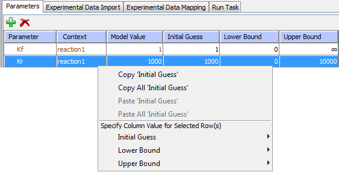

On top of the "Parameter Esimation" tab, click “New…” button. A window will pop up to prompt you to enter a name for the new task. After you click “OK”, the newly created task will show up in the drop down menu named "Select a Task".

Click on the "Parameters" tab under "Parameter Estimation". You can add parameters you want to be estimated by clicking the "add parameters" button. A "Select Parameters" window will pop up. You then can select one or more parameters (use "control" or "shift" + mouse click) in the window.

Click on the "OK" button. The selected parameters will show up in a table. In this table, you can change initial guess, lower and upper bounds of the parameters just by double clicking the corresponding table cells. Right-click menu allows copy/paste of "Initial Guess" values and items to edit other table values.

Click on the "Experimental Data Import" tab, you will see there are two ways to load experimental data. Select a csv file to import using “Import from CSV file…” or click “Edit” and paste the desired reference data. Note that the data must be separated by commas, tabs or spaces. Column 1 should contain the times. Each row represents data at that time point. The first row must contain column names. Once imported, the data is displayed as a graph in plot view or table in data view in the Reference Data tab.
You can improve the optimization speed by reducing the number of time points. By clicking “Subsample”, points will be removed from the data set.

Experimental Data Mapping tab shows the association of experimental data with model variables. Select a row from the 'Experimental Data' column and click the 'Map Experimental Data...' button, choose a model variable from the list dialog that appears.

Firstly, you have to choose a method. Go to “Run Task” tab. Select one of the COPASI methods available in the drop down menu for parameter estimation. You can find the detailed description of methods in the previous section, or click on the "Copasi Methods Help" button to see the embedded help.
Secondly, you click "Solve by Copasi" to run the parameter estimation and acquire the results. You can stop at any time by clicking “Stop” button while it’s running. After the task is completed, you can use “Plot” to plot the estimated solution for the optimized variable and reference data. To save and apply the solution of the parameter estimation to the model, click “Save solution as new Simulation...”.
Although, the reference data remains associated with the Application, optimized parameter values returned under the “Optimization” tab will be lost unless they are saved by using “Save solution as new Simulation”. After clicking “Save solution as new Simulation”, you will find the optimized parameter set as a newly created simulation under the Simulation tab.

At the bottom of the window, there is an 'Object Properties' pane. you can change the name of the parameter estimation task and add an annotation. click the 'Problems' tab to see more information about any problems in the model.
You can copy or delete a parameter estimation task by clicking “Copy…” or “Delete” button.